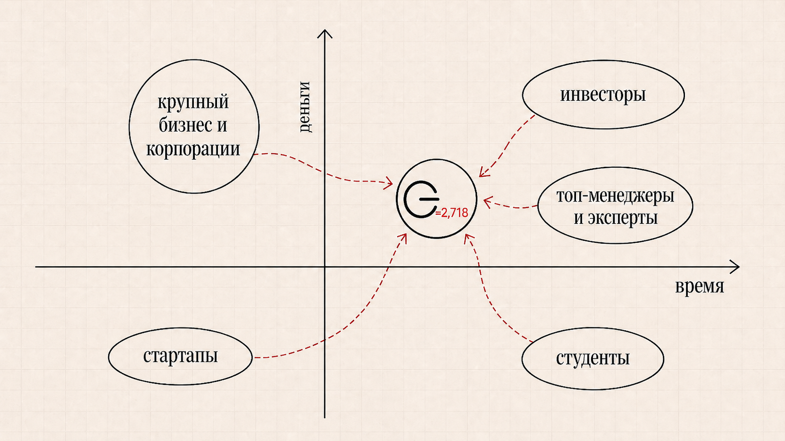
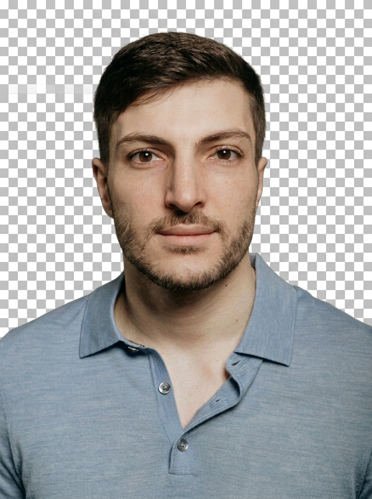
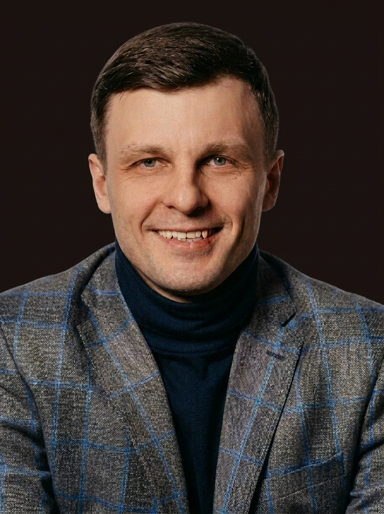

ИИ в кибербезопасности
Продукты для защиты корпоративной инфраструктуры, анализа угроз, выявления аномалий и автоматизации работы команд информационной безопасности. Такие решения помогают компаниям быстрее обнаруживать инциденты, снижать нагрузку на SOC и повышать устойчивость к киберрискам.
Венчур-билдер AI и Tech-проектов
ОСНОВАНИЕ 2.718
Строим технологические компании вместе с фаундерами и корпорациями
Мы создаем и усиливаем технологические компании на стыке искусственного интеллекта, enterprise software и реальных бизнес-задач. Входим в проекты как кофаундер, помогаем собрать команду, продукт, GTM, AI-экспертизу, предоставляем доступ к рынку и капитал.
AI-компании рождаются там, где технология встречается с реальной задачей бизнеса
Направления
Мы фокусируемся на B2B и B2G-моделях, где сильная технология сочетается с понятной бизнес-болью. Нам интересны рынки, где AI не является модной надстройкой, а встроен в саму основу ценности продукта для клиента
Какую ценность мы создаем
ОСНОВАНИЕ входит в проект как активный кофаундер и помогает собрать недостающие элементы технологической компании: команду, продукт, GTM, AI/Tech-компетенции, доступ к клиентам, капитал и дисциплину исполнения. Мы одновременно повышаем вероятность успеха и снижаем цену ошибок на ранней стадии.
Фаундерам
Не строить компанию в одиночку
Создавать технологическую компанию одному — высокий риск. Мы входим как сооснователь: берем долю, разделяем ответственность и строим бизнес вместе с вами.
Что вы получаете
- Партнера уровня команды — закрываем стратегию, GTM, AI-экспертизу
- Ускорение от идеи до первых продаж и MVP
- Доступ к клиентам, корпорациям и инвесторам
- Помощь в сборке команды и закрытии пробелов
- Инвестиции на развитие
= вероятность успеха вашего стартапа системно растет
Tech & AI экспертам
Делись экспертизой там, где она меняет индустрию
Вы глубоко понимаете технологию. Мы даем возможность применить эти знания там, где они превращаются в реальный бизнес — а не остаются советами на совещаниях.
Что вы получаете
- Доступ к портфелю технологических стартапов
- Участие в оценке и развитии реальных проектов
- Возможность войти в стартап как технический сооснователь
- Нетворк фаундеров, инвесторов и корпораций
= ваша экспертиза становится долей в растущей компании
Инвесторам
Снижаем риск инвестирования на ранних стадиях
Мы не приносим сырые идеи. К моменту инвестиции стартап уже прошел валидацию, собрал команду и выстроил структуру — билдер внутри разделяет ответственность за результат.
Что вы получаете
- Отобранный deal flow — только стартапы с подтвержденным потенциалом
- Ранний вход — до выхода стартапа на открытый рынок
- Команду и структуру, готовые к масштабированию
- Билдера внутри компании как гаранта качества
= качественные инвестиции с пониженным риском
Корпорациям
Получить инновацию извне
У вас есть технологическая задача, но нет времени и ресурсов строить решение внутри. Передайте ее нам — мы соберем команду, запустим стартап и доведем до результата.
Что вы получаете
- Быстрый запуск новых продуктов и venture-case под конкретные задачи.
- Внешний R&D — быстрее и дешевле, чем внутренняя разработка
- Пилот с технологической командой без найма и бюрократии
- Возможность войти в стартап как инвестор, стратегический партнер или приобрести его
= ваши задачи решаются быстро, технологично и без лишних затрат
С кем мы строим компании

Команда
Познакомьтесь с теми, кто будет строить вместе с вами.

Александр
Управляющий партнер
Бизнес-архитектор. Опыт создания компаний с выручкой до 500 млн. Корпоративная среда, управление субфондом, пивоты и экзиты.
EdTech, Cybersecurity, Industrial, IT in E-Commerce

Игорь
Управляющий партнер
Сооснователь и директор по инновациям R-Vision. Опыт развития enterprise cybersecurity-бизнеса, выстраивания технологических партнёрств со стартапами и работы на стыке ИБ, ИИ, data и корпоративного ПО.
Cybersecurity, Enterprise Software, AI, B2B Sales
О нас
ОСНОВАНИЕ 2.718 — венчур-билдер, который создает и усиливает технологические компании на стыке AI, enterprise software и корпоративных задач.
Большинство технологических компаний умирают не из-за слабой идеи. Они ломаются на сборке недостающих компанентов. Не хватает сильного кофаундера, product и GTM-компетенций, доступа к клиентам, AI и Tech-экспертизы, капитала и дисциплины исполнения.
ОСНОВАНИЕ закрывает этот разрыв и собирает рабочую архитектуру компании. Мы соединяем фаундеров, технологических лидеров, корпорации и инвесторов — и помогаем собрать из идеи работающую архитектуру компании.
Мы находимся между фондом, кофаундером и операционной платформой — поэтому усиливаем проект системно, а не точечно.
Для фаундера это партнерство. Для эксперта — возможность превратить знания в долю. Для инвестора — зрелые, отобранные проекты. Для корпорации — быстрый запуск AI-решений под реальные задачи.
Мы работаем в двух форматах
Cofounder-first
К нам приходит внешний фаундер, идея или проект. Мы усиливаем компанию ресурсами, операционной архитектурой, GTM, AI/Tech-экспертизой, доступом к рынку и капиталом.
Результат — выше скорость сборки компании и ниже execution-риск.
Builder-first
Идея рождается внутри билдера — из анализа рынка, корпоративных задач и технологических сдвигов. Мы находим подходящего фаундера или команду и запускаем новую компанию.
Результат — системный pipeline проектов, созданных под реальный спрос
Обе модели сходятся в одном — ОСНОВАНИЕ участвует не как наблюдатель, а как архитектор компании
FAQ
Венчурный билдер — это организация, которая системно создает технологические стартапы. Она участвует в построении бизнеса с самого начала: формирует идею, собирает команду, строит продукт и запускает продажи. Взамен билдер получает долю в компании и несет ответственность за результат наравне с фаундером.
Мы входим в капитал компании как активный кофаундер. Размер доли зависит от стадии проекта, объема нашей роли, инвестиций, ресурсов и уровня риска.
Мы закрываем то, чего чаще всего не хватает ранней технологической компании: стратегию, GTM, AI-экспертизу, доступ к рынку, помощь в сборке команды, подготовку к инвестициям и партнерское участие.
Нет, команда не обязательна. Мы можем подключиться на ранней стадии: помочь проверить идею, найти сильную бизнес-модель, собрать недостающих участников и довести проект до MVP и первых клиентов.
Хочешь обсудить потенциальное партнерство?
Выбери свою роль.
Пришли эту информацию нам на почту:
- сайт компании
- описание задачи
- Telegram для связи